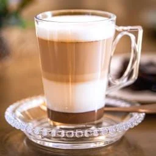

Caffè latte
café de origem italiana feita com café expresso e leite vaporizado com uma quantidade generosa de espuma de leite no topo.

Café expresso
expresso, é um método de preparar café através da passagem de água quente, não fervente, sob alta pressão pelo café moído.

Amarula prestigio
Desfrute deste café único, feito com grãos selecionados e aromatizado com o delicioso licor de Amarula.

Moccha
O nome é derivado da cidade de Mocha, Iêmen, que foi um dos primeiros centros do comércio de café.

Scottish coffee
uma mistura feita com café quente, uísque irlandês, açúcar e coberto com chantilly.